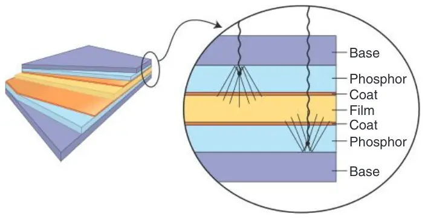
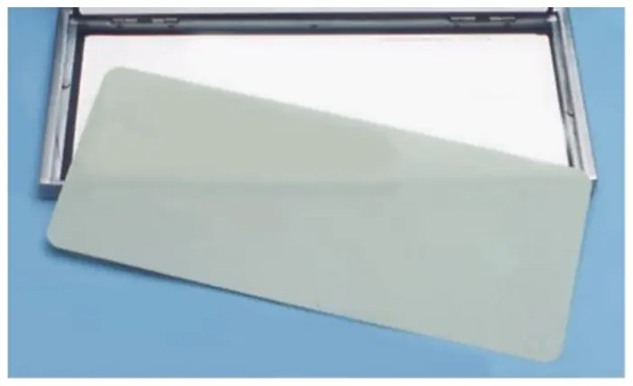

نسخه استخراجشده؛ ترجمه یا تأیید علمی انجام نشده است. وضعیت: captured
اصل کار در یک جمله: «صفحات PSP انرژی پرتو ایکس را جذب و ذخیره میکنند و این انرژی را بهصورت نور (فسفرسانی) آزاد میکنند، وقتی با نور دیگری با طول موج مناسب تحریک شوند.»

و چرا این کار میکند؟ «تا آنجا که طول موج نور تحریککننده و نور فسفرسان با هم فرق دارند، این دو را میتوان از هم تمیز داد، و فسفرسانی را میتوان بهعنوان سنجهای از مقدار انرژی پرتو ایکس جذبشده کمّی کرد.»
ترکیب دقیقش: «مادهی PSP بهکاررفته در تصویربرداری رادیوگرافی، باریم فلوروهالید آلاییده با اروپیوم است. باریم در ترکیب با ید، کلر یا برم، یک شبکهی بلوری میسازد. و افزودن اروپیوم، نقصهایی در این شبکه ایجاد میکند.»
مرحلهی ۱ — آمادهسازی (پاک کردن): «در آغاز، صفحهی PSP با نور سفید غرقاب میشود تا همهی الکترونها به نوار ظرفیت بازگردند.»
مرحلهی ۲ — پرتوگیری و تشکیل تصویر نهفته: «وقتی در معرض منبع پرتوی بهقدر کافی پرانرژی قرار گیرد، الکترونهای ظرفیت در اروپیوم میتوانند انرژی جذب کنند و به نوار رسانش بروند. این الکترونها به جاهای خالی هالوژن مجاور (مراکز F) در شبکهی فلوروهالید مهاجرت میکنند و ممکن است آنجا در یک حالت شبهپایدار به دام بیفتند.»
و اکنون تعریف تصویر نهفته: «در این حالت، شمار الکترونهای بهدامافتاده متناسب با پرتوگیری است و تصویر نهفته را میسازد.»
مرحلهی ۳ — خواندن با لیزر: «وقتی با نور قرمز حدود ۶۰۰ نانومتر تحریک شود، باریم فلوروهالید الکترونهای بهدامافتاده را به نوار رسانش آزاد میکند. وقتی الکترونی به یون اروپیوم سهبار مثبت بازگردد، انرژی بهصورت نور در طیف سبز میان ۳۰۰ تا ۵۰۰ نانومتر آزاد میشود.»
و مسیر سیگنال تا تصویر: «فیبرهای نوری نور را از صفحهی PSP به یک لولهی فوتومولتیپلایر هدایت میکنند، که این نور را به انرژی الکتریکی تبدیل میکند. یک فیلتر قرمز در لولهی فوتومولتیپلایر، نور لیزر تحریککننده را بهطور انتخابی حذف میکند، و نور سبز باقیمانده آشکار و به ولتاژ متغیر تبدیل میشود.» سپس «سیگنال ولتاژ با یک مبدل آنالوگ به دیجیتال کمّی میشود».
پس دو رنگ را جفت به یاد بیاور: قرمز ۶۰۰ نانومتر تحریک میکند، سبز ۳۰۰ تا ۵۰۰ نانومتر خوانده میشود — و همین اختلاف طول موج است که کل فناوری را ممکن میکند.
«در عمل، مادهی باریم فلوروهالید با یک پلیمر ترکیب و در لایهای نازک روی یک مادهی پایه پخش میشود تا صفحهی PSP ساخته شود. برای رادیوگرافی داخلدهانی، پایهای پلیاستری مشابه فیلم رادیوگرافی به کار میرود.»
و مزیت عملیاش: «وقتی در اندازههای استاندارد داخلدهانی ساخته شوند، این صفحات ویژگیهای کار مشابه فیلم داخلدهانی دارند.» و انعطافش: «صفحات PSP در اندازههای رایج پانورامیک و سفالومتریک هم ساخته میشوند. برخی پروسسورهای PSP کل دامنهی اندازههای داخلدهانی و خارجدهانی را میپذیرند؛ برخی دیگر به فرمت داخلدهانی یا خارجدهانی محدودند.»
الزام: «پیش از پرتوگیری، صفحات PSP باید پاک شوند تا تصاویر باقیمانده از پرتوگیریهای پیشین حذف شوند. این پاک کردن با غرقاب کردن صفحه با نوری روشن انجام میشود.»

و روشهایش: «سامانههای PSP کنونی پاک کردن خودکار صفحه را در خود اسکنر ادغام کردهاند. صفحات را میتوان با گذاشتن روی یک ویوباکس دندانی با سمت فسفری رو به نور به مدت یک یا دو دقیقه هم پاک کرد. منابع نوری شدیدتر را میتوان برای مدتهای کوتاهتر به کار برد.»
و پیامد پاک نکردن کافی: «به تصاویر دوگانه میانجامد و معمولاً تصویر را غیرتشخیصی میکند.»
و پس از پاک کردن: «صفحات پاکشده پیش از پرتوگیری در محفظههای نفوذناپذیر به نور گذاشته میشوند. برای صفحات داخلدهانی، پاکتهای پلیوینیلی قابل مهر و موم که در برابر مایعات دهانی و نور نفوذناپذیرند به کار میروند. برای صفحات با فرمت بزرگ، کاستهای معمولی بدون صفحات تشدیدکننده به کار میروند.»
قاعدهی اصلی: «پس از پرتوگیری، صفحات باید هرچه زودتر پردازش شوند، چون الکترونهای بهدامافتاده بهمرور خودبهخود آزاد میشوند. و نرخ از دست رفتن الکترونها اندکی پس از پرتوگیری بیشترین است.»
و به چه چیزی بستگی دارد؟ «به ترکیب فسفر ذخیرهای و دمای محیط.»
و اعداد کلیدی: «برخی فسفرها ۲۳ درصد الکترونهای بهدامافتادهشان را پس از ۳۰ دقیقه و ۳۰ درصد را پس از ۱ ساعت از دست میدهند.»
ولی اکنون یک نکتهی آرامشبخش و یک استثنا: «چون از دست رفتن الکترونها در سراسر سطح صفحه یکنواخت است، از دست رفتن زودهنگام بار معمولاً به تخریب معنادار بالینی تصویر نمیانجامد.» ولی: «تصاویر کمپرتودیده ممکن است تخریب محسوس تصویر بهشکل افزایش نویز نشان دهند.» و یک عدد کاربردی: «تصاویر بهقدر کافی پرتودیده را میتوان ۱۲ تا ۲۴ ساعت نگه داشت و کیفیت تصویر پذیرفتنی را حفظ کرد.»
«منبع مهمتر محو شدن تصویر نهفته، قرار گرفتن در معرض نور محیط حین آمادهسازی صفحه برای پردازش است. محیطی نیمهتاریک برای کار با صفحات توصیه میشود.» و رابطهاش: «هرچه نور زمینه شدیدتر و مدت قرار گرفتن صفحه در معرض آن بلندتر، از دست رفتن الکترونهای بهدامافتاده بیشتر و تصویر حاصل تخریبشدهتر.»
و اکنون یک هشدار که بسیاری را غافلگیر میکند: «چراغهای ایمن قرمز موجود در بیشتر اتاقهای تاریک، برای صفحات PSP پرتودیده ایمن نیستند، چون این صفحات بیشترین حساسیت را به طیف نور قرمز دارند.»
و منطقش را از درس پیش بازسازی کن: نور قرمز حدود ۶۰۰ نانومتر دقیقاً همان چیزی است که لیزر اسکنر برای آزاد کردن الکترونهای به دام افتاده به کار میبرد. پس چراغ ایمن قرمز، در عمل صفحه را کمکم میخواند و پاک میکند.
سازوکار رایج: «سوردکس در سامانههای Digora و OpTime و ایر تکنیکس در سامانهی ScanX از یک آینهی چندوجهی با چرخش سریع استفاده میکنند که باریکهای از نور لیزر قرمز را بازمیتاباند. با چرخش آینه، نور لیزر روی صفحه جاروب میکند. سپس صفحه پیش میرود و خط مجاور فسفر اسکن میشود.»
و دو اصطلاح جهت — اینها را جفت حفظ کن: «جهت جاروب لیزر روی صفحه جهت اسکن سریع نامیده میشود. جهت پیشروی صفحه جهت اسکن کند نامیده میشود.»
و پاک کردن خودکار: «این اسکنرها، و نیز اسکنر CS 7600 کرستریم و ProScanner پلانمکا، پاک کردن خودکار صفحه پس از اسکن را هم در بر دارند.» و سودش: «گردش کار را بهبود میدهد و آسیب بالقوهی صفحه از پاک کردن دستی را کاهش میدهد.»
و دو راهحل هوشمندانه برای دو مشکل رایج:
و وضعیت فعلی بارگذاری: «اسکنرهای PSP کنونی همگی از بارگذاری تکتک صفحات استفاده میکنند.» و رویکرد جایگزین: «یک درام با چرخش سریع که میتواند چند صفحه را نگه دارد... هرچند برخی از این سامانهها احتمالاً هنوز در استفادهاند، دیگر توسط سازندگان پیشرو تولید نمیشوند.»